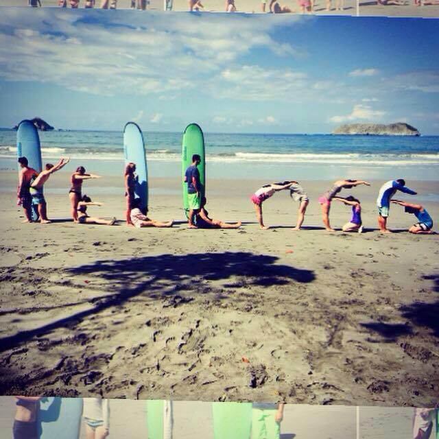

Zenubia studied at the University of Virginia, where she got a B.S. in Commerce, concentrating in Finance and Information Technology, and double major in Foreign Affairs. After graduation, Zenubia joined Kurt Salmon in New York City as a retail strategist consultant. Over the last few years, she developed an expertise in Omnichannel strategy. Currently, Zenubia is an MBA student at the Kellogg School of Management, planning on concentrating in Strategy and Marketing.
Most recent project experiences include:
Delivered on operational strategy and transformation projects for over 10 retail clients in multiple sector, including luxury apparel, off-price and specialty retailers. Project highlights include: